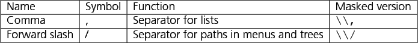

In addition to these general symbols, there are a few symbols which have a special meaning for particular components (8.3). They must be masked if you want to use them without their special function for these components only. Masking these symbols must be done with a double backslash.
Figure 8.2: Symbols for components
|  |
Copyright BREDEX GmbH 2014. Made available under the Eclipse Public License v1.0.